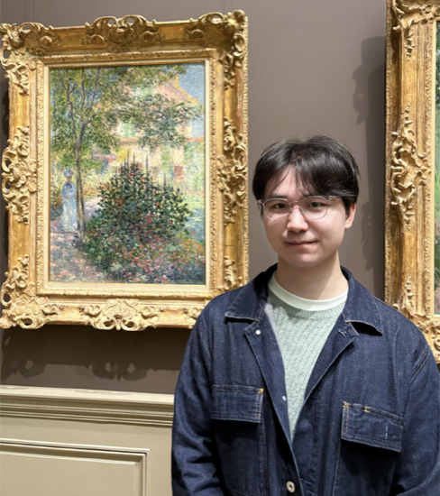
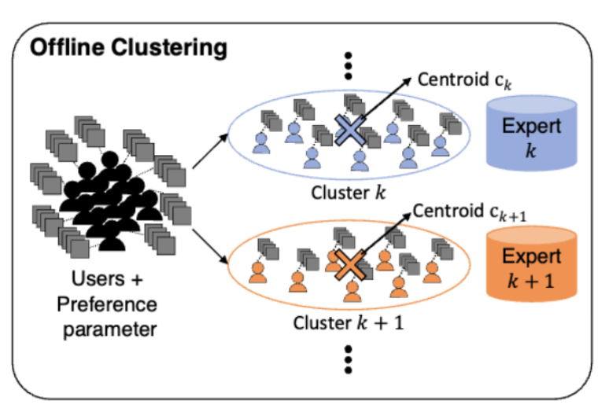
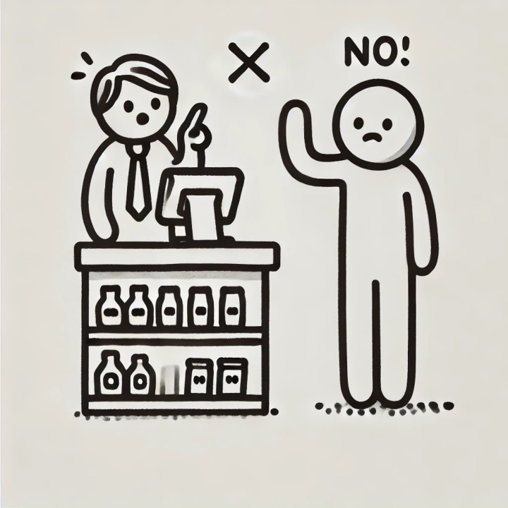
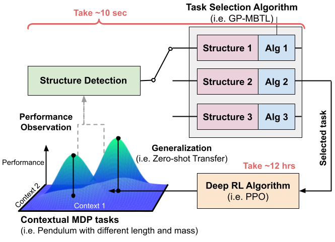

Massachusetts Institute of Technology (MIT)
Cambridge, MA
Ph.D. in Civil and Environmental Engineering · Advisor: Prof. Cathy Wu · GPA: 5.0/5.0

Ph.D. Student in Civil and Environmental Engineering
Massachusetts Institute of Technology · Advisor: Prof. Cathy Wu
I work on machine learning for decision-making in complex systems, with a focus on reinforcement learning, contextual bandits, and transfer learning for personalized recommendations and multi-task control.
Cambridge, MA
Ph.D. in Civil and Environmental Engineering · Advisor: Prof. Cathy Wu · GPA: 5.0/5.0
Shanghai, China
B.Eng. in Computer Science · GPA: 3.75/4.0
Cambridge, MA
Undergraduate Exchange Student, Computer Science · GPA: 4.5/5.0

Learning for Dynamics and Control Conference (L4DC), pp. 707–718, 2024

